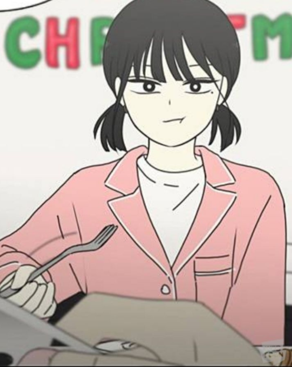

1. 공주영 은 일가족 모두의 이름이 공개된 유일한 등장인물이다. 공주영은 아버지 공영호와 어머니 박리사의 장남이며, 남동생으로 공재민이 있다. 집안 문제로 자취하게 되었다지만, 가족관계가 나쁘지는 않다. 공재민과는 보통의 형제답게 때리고 맞고 투닥거리거나 최정우가 떨어트린 인형을 줍자 곧바로 재민이 줘야지 하는거 보면 우애가 없진 않은 듯하며, 일반적인 학생과 학부모 간의 학업이나 진로 갈등만 빼면 성격적으로는 부모님과도 큰 마찰이 없다.
2. 왕자림 성격이 정반대인 왕별림은 한살 터울 자매답게 언니인 왕자림을 까내리기 바쁘지만 왕자림이 곧잘 넘기는 것은 물론, 같은 방도 모자라 한 침대까지 공유하는 등 자매 사이는 그런대로 괜찮은 편이다.

3. 이경우 주연인물 중 현재까지 밝혀진 가족관계에서 유일한 외동이며, 부모님의 이혼으로 인해 어머니와 함께 빌라에 거주하고 있다. 한부모 가정의 영향일지는 몰라도 고등학교 남학생치고 어머니와 관계가 매우 좋으며, 주부 갱단이라는 설정까지 붙을 정도로 가사 센스가 돋보인다.4. 김병훈 김영주와 김영지라는 일란성 쌍둥이 여동생이 있는데, 시골에 살았었던 시절만 해도 우애 좋은 남매였지만 현재는 그런 거 없다. 그래도 김영지를 '내동생영지'라고 저장해둔 것을 보면, 꽤나 아끼는건 여전하다.
5. 양민지 2살 많은 언니 양민아가 있는데, 양민지는 주연인물 중 손위 여자 형제가 있는 유일한 인물이다. 전형적인 자매들의 모습을 보이며 자주 투닥거리긴 해도 언니와 같은 방을 쓰거나, 어머니가 양민지의 행동을 걸고 내기도 하는 등 가족관계 자체는 굉장히 좋다.
6. 오아람 1부 기준으로 왕자림, 양민지과 3년지기 친구로서 삼일여자중학교 동창, 이삼정보고등학교 동문생이다. 워낙 장난을 잘 받아줘서 그런지 오돼지, 아롱이, 와람이, 초딩 등의 많은 별명을 가지고 있다.
7. 석호 사나워 보이는 인상과 다르게 의외로 의리있고 중학생 당시 공주영을 괴롭히던 이경우에게 심하다고 제재하거나 공주영을 걱정하며 이경우에게 신경 끄자고 조언하는 등 속정이 깊은 편이다. 은근히 안 챙겨 주는듯 하면서도 많이 챙겨주는 츤데레 스타일이다.
8. 안경민 이름에 걸맞게 안경이 가장 큰 특징인 캐릭터. 안경을 쓰지 않던 초등학교 시절의 과거회상을 보면 특이하게도 눈에 안경이라는 특징이 있는데, 한쪽 눈에만 쌍꺼풀이라는 특징을 하나 더 가지고 있다. 말풍선에 안경이 달려 있어, 얼굴이 등장하지 않아도 안경민의 대사는 확실히 구분할 수 있다.\
9. 홍진희 처음에는 왕자림을 비롯한 여성 주연인물들의 중학교 동창이자 다른 반 친구 및 조연로서 등장했으나, 2부부터는 같은 반이 되면서 비중과 입지가 덩달아 상승하며 공식적으로 주연인물에 등극하는 독특한 유형의 인물이다.